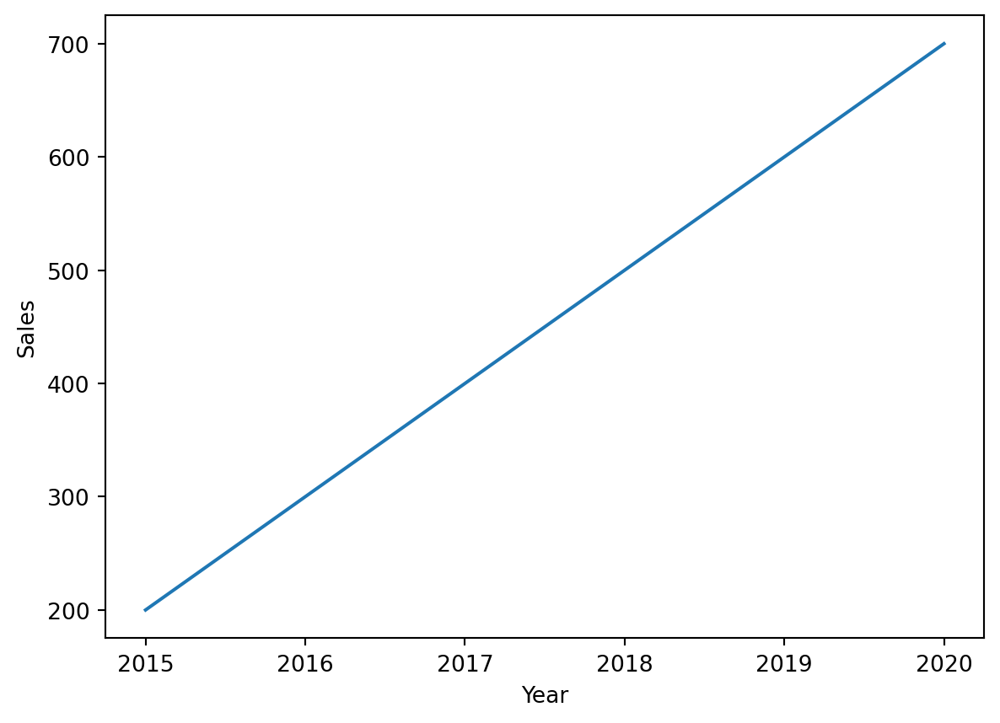
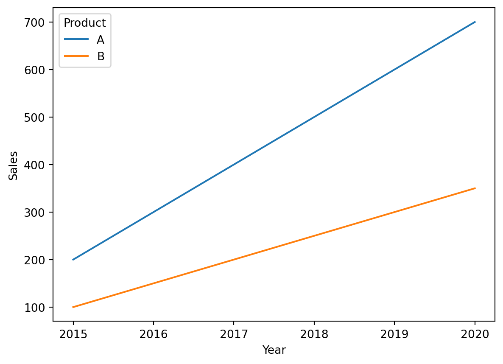
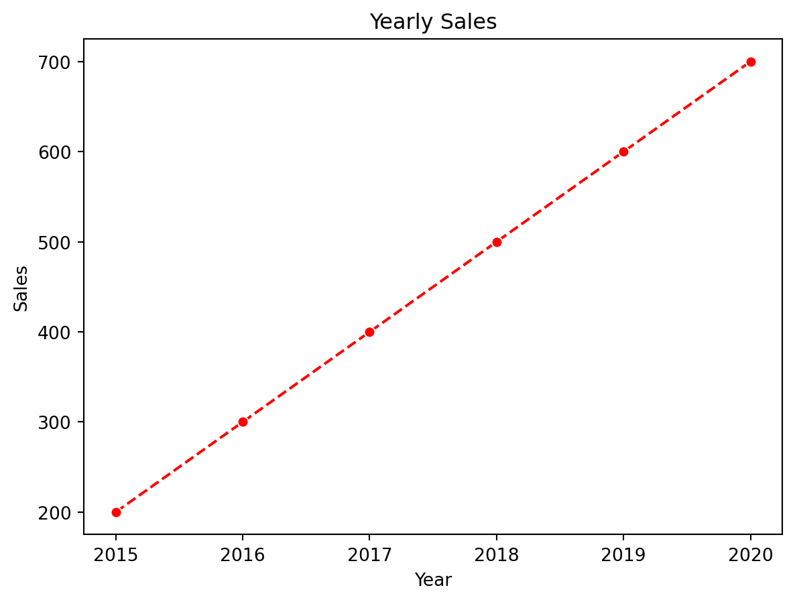

import numpy as np
import pandas as pd
import seaborn as sns
import matplotlib.pyplot as plt3 Data Transformation I
In this case, we learned how to further maniuplate DataFrames with pandas and numpy. Notably, creating your own functions and creating pivot tables.
3.1 Preliminary modules
3.2 Some more pandas functions
3.2.1 Unique
The unique function in pandas is used to find the unique values in a Series or a column of a DataFrame. It returns the unique values as a NumPy array. This function is useful when you need to identify the distinct values in a dataset.
Syntax:
pandas.Series.unique()This method returns the unique values in the Series.
Examples:
# Creating a Series
data = pd.Series([1, 2, 2, 3, 4, 4, 4, 5])
# Finding unique values
unique_values = data.unique()
print(unique_values)
# In this example, `data.unique()` returns a NumPy array containing the unique values `[1, 2, 3, 4, 5]` in the Series `data`.
# Example 2: Finding Unique Values in a DataFrame Column
# In this example, `df['A'].unique()` returns a NumPy array of unique values in column 'A', and `df['B'].unique()` returns a NumPy array of unique values in column 'B'.
# Creating a DataFrame
df = pd.DataFrame({
'A': [1, 2, 2, 3, 4, 4, 4, 5],
'B': ['a', 'b', 'b', 'c', 'd', 'd', 'd', 'e']
})
# Finding unique values in column 'A'
unique_values_A = df['A'].unique()
# Finding unique values in column 'B'
unique_values_B = df['B'].unique()
print("Unique values in column A:", unique_values_A)
print("Unique values in column B:", unique_values_B)[1 2 3 4 5]
Unique values in column A: [1 2 3 4 5]
Unique values in column B: ['a' 'b' 'c' 'd' 'e']3.2.2 The .apply function
The .apply() function in pandas is used to apply a function along the axis of a DataFrame or to elements of a Series. This function is highly versatile and can be used to perform complex operations on your data.
Basic Syntax
For a Series:
Series.apply(func)For a DataFrame:
DataFrame.apply(func, axis=0)Parameters:
- func: The function to apply to each element (Series) or to each column/row (DataFrame).
- axis: {0 or ‘index’, 1 or ‘columns’}, default 0. The axis along which the function is applied:
- 0 or ‘index’: apply function to each column.
- 1 or ‘columns’: apply function to each row.
Examples:
Example 1: Applying a Function to Each Element in a Series
# Creating a Series
data = pd.Series([1, 2, 3, 4, 5])
# Function to square each element
def square(x):
return x * x
# Applying the function
squared_data = data.apply(square)
print(squared_data)0 1
1 4
2 9
3 16
4 25
dtype: int64In this example, the square function is applied to each element of the Series data, resulting in a new Series squared_data where each value is the square of the corresponding original value.
Example 2: Applying a Function to Each Column in a DataFrame
# Creating a DataFrame
df = pd.DataFrame({
'A': [1, 2, 3],
'B': [4, 5, 6],
'C': [7, 8, 9]
})
# Function to sum the elements of a column
def column_sum(col):
return col.sum()
# Applying the function to each column
column_sums = df.apply(column_sum, axis=0)
print(column_sums)A 6
B 15
C 24
dtype: int64In this example, the column_sum function is applied to each column of the DataFrame df, resulting in a Series column_sums containing the sum of the elements in each column.
Example 3: Applying a Function to Each Row in a DataFrame
# Creating a DataFrame
df = pd.DataFrame({
'A': [1, 2, 3],
'B': [4, 5, 6],
'C': [7, 8, 9]
})
# Function to find the maximum value in a row
def row_max(row):
return row.max()
# Applying the function to each row
row_maxs = df.apply(row_max, axis=1)
print(row_maxs)0 7
1 8
2 9
dtype: int64In this example, the row_max function is applied to each row of the DataFrame df, resulting in a Series row_maxs containing the maximum value in each row.
3.2.3 The str.count() function
The str.count() function counts the occurrences of a pattern or substring in a Series.
Syntax:
Series.str.count(pat)Here, pat is the pattern or substring to count.
Example: Counting substrings in a Series:
# Creating a Series
data = pd.Series(['apple', 'banana', 'apple pie', 'cherry'])
# Counting occurrences of 'apple'
apple_count = data.str.count('apple')
print(apple_count)
# Counting occurrences of 'a'
a_count = data.str.count('a')
print(a_count)0 1
1 0
2 1
3 0
dtype: int64
0 1
1 3
2 1
3 0
dtype: int643.2.4 Pivot Tables
The pd.pivot_table() function in pandas is a powerful tool for reshaping data. It allows you to aggregate data and create a new table that is a more compact and organized representation of your original DataFrame. Loosely, pivot tables can be used when you would like to make one column in your original DataFrame into the column names of a new DataFrame, one column in your original DataFrame into the new rows of that new DataFrame, and lastly, an aggregation of another column as the entries in the new DataFrame.
Syntax:
pd.pivot_table(data, values=None, index=None, columns=None, aggfunc='mean', fill_value=None, dropna=True)data: The DataFrame to pivot.values: Column(s) to aggregate.index: Column(s) to set as index.columns: Column(s) to pivot.aggfunc: Function to aggregate the data (default is ‘mean’).fill_value: Value to replace missing values.dropna: Do not include columns whose entries are all NaN (default is True).
Example:
Let’s consider a dataset containing sales data:
# Sample data
data = {
'Region': ['North', 'South', 'East', 'West', 'North', 'South', 'East', 'West'],
'Product': ['A', 'A', 'B', 'B', 'A', 'B', 'A', 'B'],
'Sales': [100, 150, 200, 130, 120, 170, 160, 180],
'Quantity': [10, 15, 20, 13, 12, 17, 16, 18]
}
df = pd.DataFrame(data)
print(df) Region Product Sales Quantity
0 North A 100 10
1 South A 150 15
2 East B 200 20
3 West B 130 13
4 North A 120 12
5 South B 170 17
6 East A 160 16
7 West B 180 18Let’s create a pivot table to summarize the total sales and quantity for each region and product.
pivot_table = pd.pivot_table(df, values=['Sales', 'Quantity'], index=['Region'], columns=['Product'], aggfunc='sum', fill_value=0)
print(pivot_table) Quantity Sales
Product A B A B
Region
East 16 20 160 200
North 22 0 220 0
South 15 17 150 170
West 0 31 0 310Explanation:
data: The DataFrame to pivot (dfin this case).values: The columns to aggregate ('Sales'and'Quantity').index: The column(s) to set as the index of the pivot table ('Region').columns: The column(s) to pivot ('Product').aggfunc: The aggregation function ('sum'), to get the total sales and quantity.fill_value: The value to replace missing values (0).
The resulting pivot table shows the total sales and quantities for each combination of region and product. The rows represent the regions, and the columns represent the products. The values in the table are the sums of sales and quantities.
3.3 Controlling the case in string columns
str.lower: Converts all characters in a string to lowercase.str.upper: Converts all characters in a string to uppercase.
str.lower
The str.lower function in pandas is used to convert all characters in a string to lowercase. It is often used when you want to standardize text data, making it easier to compare strings that might have different cases.
Syntax:
Series.str.lower()Example:
# Creating a Series
data = pd.Series(['Hello', 'World', 'PANDAS'])
# Converting to lowercase
lowercase_data = data.str.lower()
print(lowercase_data)0 hello
1 world
2 pandas
dtype: objectstr.upper
The str.upper function in pandas is used to convert all characters in a string to uppercase.
Syntax:
Series.str.upper()Example:
# Creating a Series
data = pd.Series(['hello', 'world', 'pandas'])
# Converting to uppercase
uppercase_data = data.str.upper()
print(uppercase_data)0 HELLO
1 WORLD
2 PANDAS
dtype: object3.4 Personalized functions
3.4.1 Custom functions
In Python, you can create your own functions to encapsulate reusable code, improve readability, and make your programs more modular. A function is defined using the def keyword, followed by the function name, parentheses (), and a colon :. The code block within the function is indented.
Syntax:
def function_name(parameters):
"""Docstring (optional): A brief description of the function."""
# Function body
# Code to be executed
return value # Optional: return statement to return a value- function_name: The name of the function.
- parameters: A list of parameters (or arguments) that the function accepts.
- Docstring: A string describing what the function does.
- return: The value that the function returns.
Example 1: A Simple Function
Here’s a simple example of a function that takes no parameters and prints a message:
def greet():
"""Print a greeting message."""
print("Hello, world!")
# Calling the function
greet()Hello, world!Example 2: A Function with Parameters
Here’s a function that takes two parameters and returns their sum:
def add(a, b):
"""Return the sum of two numbers."""
return a + b
# Calling the function
result = add(3, 5)
print(result)8Example 3: A Function with Default Parameters
You can also define functions with default parameter values:
def greet(name="world"):
"""Print a greeting message to the given name."""
print(f"Hello, {name}!")
# Calling the function with and without an argument
greet("Alice")
greet()Hello, Alice!
Hello, world!Example 4: A Function with Variable Number of Arguments
Sometimes you might want to define a function that can accept a variable number of arguments using *args and **kwargs:
def print_numbers(*args):
"""Print all the numbers passed as arguments."""
for number in args:
print(number)
# Calling the function with multiple arguments
print_numbers(1, 2, 3, 4, 5)1
2
3
4
5Example 5: A Function with Keyword Arguments
You can use **kwargs to accept a variable number of keyword arguments:
def print_info(**kwargs):
"""Print key-value pairs of the passed keyword arguments."""
for key, value in kwargs.items():
print(f"{key}: {value}")
# Calling the function with multiple keyword arguments
print_info(name="Alice", age=30, city="New York")name: Alice
age: 30
city: New York- Define a function using the
defkeyword. - Provide parameters within the parentheses (optional).
- Add a docstring to describe the function (optional but recommended).
- Write the function body with the code to be executed.
- Return a value using the
returnstatement (optional).
3.4.2 The functions map, filter and sorted
Recall that an iterable object is any object that can be looped over, meaning you can go through its elements one by one. Common examples of iterable objects include lists, strings, and dictionaries. In Python, an object is considered iterable if it implements the __iter__() method, which returns an iterator. This allows you to use it in a for loop. Essentially, if you can apply a for loop to it, it’s an iterable object.
The map(), filter(), and sorted() functions are powerful tools for working with iterable objects. Here’s a brief overview of each function:
map()
The map() function applies a given function to all items in an iterable.
Syntax:
map(function, iterable, ...)function: A function that is applied to each item of the iterable.iterable: One or more iterable objects (e.g., lists, tuples).
Example:
# Example function
def square(x):
return x ** 2
# Input list
numbers = [1, 2, 3, 4, 5]
# Apply `square` function to each item in the list
squared_numbers = map(square, numbers)
# Convert the map object to a list and print
print(list(squared_numbers))[1, 4, 9, 16, 25]The filter() function constructs an iterator from elements of an iterable for which a function returns true.
Syntax:
filter(function, iterable)function: A function that tests if each element of an iterable returns true or false.iterable: An iterable to be filtered.
Example:
# Example function
def is_even(x):
return x % 2 == 0
# Input list
numbers = [1, 2, 3, 4, 5]
# Apply `is_even` function to filter even numbers
even_numbers = filter(is_even, numbers)
# Convert the filter object to a list and print
print(list(even_numbers))[2, 4]sorted()
The sorted() function returns a new sorted list from the items in an iterable.
Syntax:
sorted(iterable, key=None, reverse=False)iterable: An iterable to be sorted.key: A function that serves as a key for the sort comparison (optional).reverse: A boolean value. IfTrue, the list elements are sorted as if each comparison were reversed (optional, default isFalse).
Example:
# Input list
numbers = [3, 1, 4, 1, 5, 9, 2, 6, 5]
# Sort the list
sorted_numbers = sorted(numbers)
print(sorted_numbers)[1, 1, 2, 3, 4, 5, 5, 6, 9]map(): Applies a function to every item in an iterable and returns a map object of the results.filter(): Constructs an iterator from elements of an iterable for which a function returns true.sorted(): Returns a new sorted list from the items in an iterable, with optional custom sorting behavior.
3.4.3 Anonymous functions
Anonymous functions are defined using the lambda keyword. These functions are often called “lambda functions” and are used for creating small, one-time, and inline function objects. Unlike regular functions defined with def, lambda functions are limited to a single expression.
Syntax of Lambda Functions
lambda arguments: expressionlambda: The keyword used to define an anonymous function.arguments: A comma-separated list of parameters.expression: A single expression that is evaluated and returned.
Example 1: Simple Lambda Function
Here’s a simple example of a lambda function that adds two numbers:
# Lambda function to add two numbers
add = lambda x, y: x + y
# Using the lambda function
result = add(3, 5)
print(result)8Example 2: Lambda Function in map()
Lambda functions are often used with functions like map(), filter(), and sorted().
# List of numbers
numbers = [1, 2, 3, 4, 5]
# Using lambda with map() to square each number
squared_numbers = list(map(lambda x: x ** 2, numbers))
print(squared_numbers)[1, 4, 9, 16, 25]Example 3: Lambda Function in filter()
# List of numbers
numbers = [1, 2, 3, 4, 5, 6, 7, 8, 9, 10]
# Using lambda with filter() to get even numbers
even_numbers = list(filter(lambda x: x % 2 == 0, numbers))
print(even_numbers)[2, 4, 6, 8, 10]Example 4: Lambda Function in sorted()
# List of tuples
points = [(1, 2), (3, 1), (5, -1), (2, 3)]
# Using lambda with sorted() to sort by the second element of each tuple
sorted_points = sorted(points, key=lambda x: x[1])
print(sorted_points)[(5, -1), (3, 1), (1, 2), (2, 3)]Characteristics and Limitations:
- Single Expression: Lambda functions can only contain a single expression. They cannot include statements or annotations.
- No
returnStatement: The expression result is implicitly returned. - Limited Use: Lambda functions are best used for short, simple operations. For more complex functions, it is better to define a regular function using
def.
When to Use Lambda Functions:
- Short, Simple Functions: When you need a quick function for a short, simple operation.
- Inline Functions: When you need a function for a one-time use, especially within functions like
map(),filter(), orsorted(). - Readability: When using a lambda function improves the readability and conciseness of your code.
Lambda functions in Python provide a concise way to create anonymous functions for simple, one-time operations. They are defined using the lambda keyword and can be used wherever function objects are required. However, due to their limitations, they are best suited for short, simple tasks and should be used judiciously to maintain code readability.
3.5 Line plots with seaborn
Line plots are useful for visualizing data over continuous intervals or time series. The module seaborn is a powerful data visualization library built on top of Matplotlib, you can create line plots easily using the lineplot function.
Syntax:
seaborn.lineplot(data=None, *, x=None, y=None, hue=None, size=None, style=None, palette=None, data_frame=None, **kwargs)data: DataFrame, array, or list of arrays, optional. Dataset for plotting.x: Name of the x-axis variable.y: Name of the y-axis variable.hue: Grouping variable that will produce lines with different colors.size: Grouping variable that will produce lines with different widths.style: Grouping variable that will produce lines with different dash patterns.palette: Colors to use for different levels of the hue variable.
Example 1: Simple Line Plot
Here’s a basic example of creating a line plot with Seaborn.
# Sample data
data = {
'Year': [2015, 2016, 2017, 2018, 2019, 2020],
'Sales': [200, 300, 400, 500, 600, 700]
}
df = pd.DataFrame(data)
# Create a line plot
sns.lineplot(data=df, x='Year', y='Sales')
# Show the plot
plt.show()
Example 2: Line Plot with Multiple Lines
You can plot multiple lines by specifying a hue parameter.
# Sample data
data = {
'Year': [2015, 2016, 2017, 2018, 2019, 2020, 2015, 2016, 2017, 2018, 2019, 2020],
'Sales': [200, 300, 400, 500, 600, 700, 100, 150, 200, 250, 300, 350],
'Product': ['A', 'A', 'A', 'A', 'A', 'A', 'B', 'B', 'B', 'B', 'B', 'B']
}
df = pd.DataFrame(data)
# Create a line plot with multiple lines
sns.lineplot(data=df, x='Year', y='Sales', hue='Product')
# Show the plot
plt.show()
Example 3: Customizing Line Plot
You can customize the appearance of your line plot by using various parameters and options.
# Sample data
data = {
'Year': [2015, 2016, 2017, 2018, 2019, 2020],
'Sales': [200, 300, 400, 500, 600, 700]
}
df = pd.DataFrame(data)
# Create a customized line plot
sns.lineplot(data=df, x='Year', y='Sales', marker='o', linestyle='--', color='red')
# Add titles and labels
plt.title('Yearly Sales')
plt.xlabel('Year')
plt.ylabel('Sales')
# Show the plot
plt.show()
To summarize:
- Creating Line Plots: Use
sns.lineplot()to create line plots easily. - Multiple Lines: Differentiate groups with the
hueparameter. - Customization: Customize appearance using parameters like
marker,linestyle, andcolor.
3.6 Writing to a csv file
The to_csv() function in pandas is used to export a DataFrame to a CSV (Comma-Separated Values) file.
Syntax:
DataFrame.to_csv(path_or_buf=None, sep=',', na_rep='', float_format=None, columns=None, header=True, index=True, index_label=None,, encoding=None, date_format=None)Parameters:
path_or_buf: The file path or object where the CSV will be saved. If not specified, the result is returned as a string.sep: The string to use as the separating character (default is a comma,).na_rep: String representation of missing data.float_format: Format string for floating-point numbers.columns: Subset of columns to write to the CSV file.header: Write out the column names (default isTrue).index: Write row names (index) (default isTrue).index_label: Column label for the index column(s) if desired.encoding: Encoding to use for writing (default isNone).date_format: Format string for datetime objects.
Example 1: Simple Export
Here’s a basic example of exporting a DataFrame to a CSV file.
# Sample DataFrame
data = {
'Name': ['Alice', 'Bob', 'Charlie'],
'Age': [25, 30, 35],
'City': ['New York', 'Los Angeles', 'Chicago']
}
df = pd.DataFrame(data)
# Export DataFrame to CSV
df.to_csv('people.csv')This will create a file named people.csv with the following content:
,Name,Age,City
0,Alice,25,New York
1,Bob,30,Los Angeles
2,Charlie,35,ChicagoExample 2: Customizing Output
You can customize the output by specifying different parameters.
# Export DataFrame to CSV without the index and with a custom separator
df.to_csv('people_no_index.csv', index=False, sep=';')This will create a file named people_no_index.csv with the following content:
Name;Age;City
Alice;25;New York
Bob;30;Los Angeles
Charlie;35;ChicagoExample 3: Handling Missing Values and Specifying Columns
# Sample DataFrame with missing values
data = {
'Name': ['Alice', 'Bob', 'Charlie', 'David'],
'Age': [25, None, 35, 40],
'City': ['New York', 'Los Angeles', 'Chicago', None]
}
df = pd.DataFrame(data)
# Export DataFrame to CSV with custom NA representation and specific columns
df.to_csv('people_missing_values.csv', na_rep='N/A', columns=['Name', 'Age'])This will create a file named people_missing_values.csv with the following content:
,Name,Age
0,Alice,25.0
1,Bob,N/A
2,Charlie,35.0
3,David,40.0Summary of usage:
- Basic Usage: Use
to_csv('filename.csv')to export a DataFrame to a CSV file. - Custom Separator: Change the delimiter using the
sepparameter. - No Index: Exclude the DataFrame index using
index=False. - Handle Missing Values: Specify a representation for missing values with
na_rep. - Select Columns: Export only specific columns using the
columnsparameter. - Advanced Options: Control formatting, quoting, encoding, and more with additional parameters.